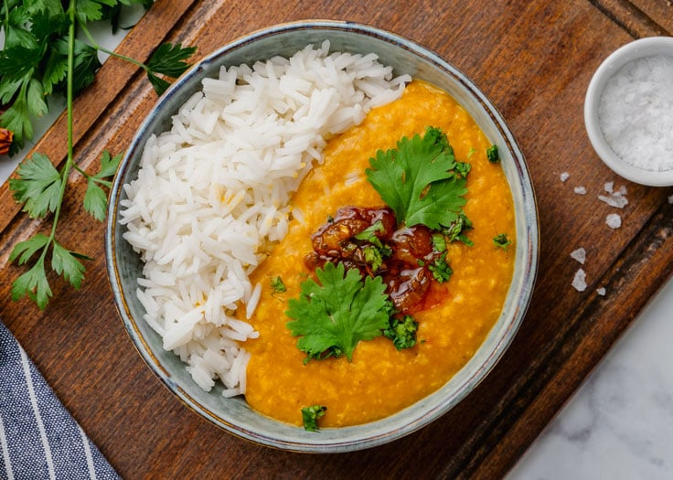
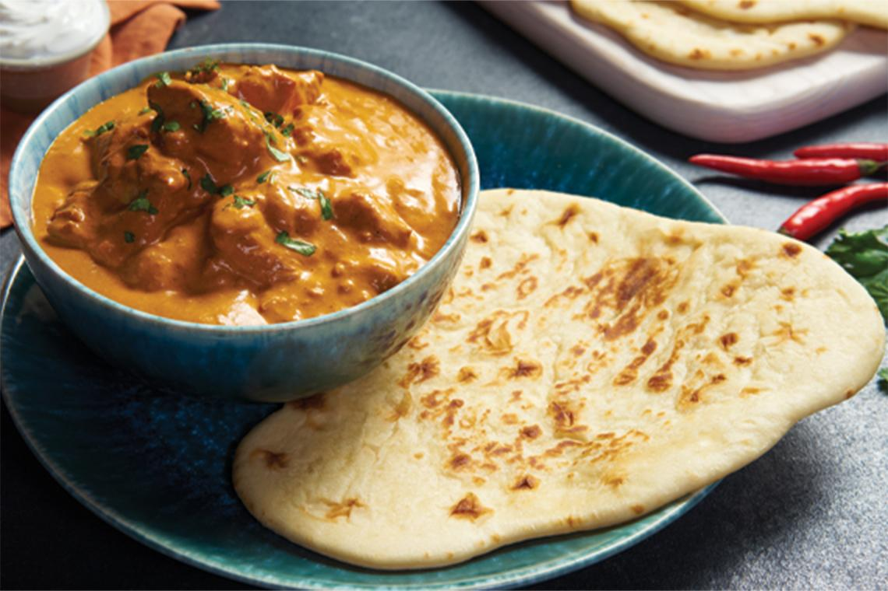
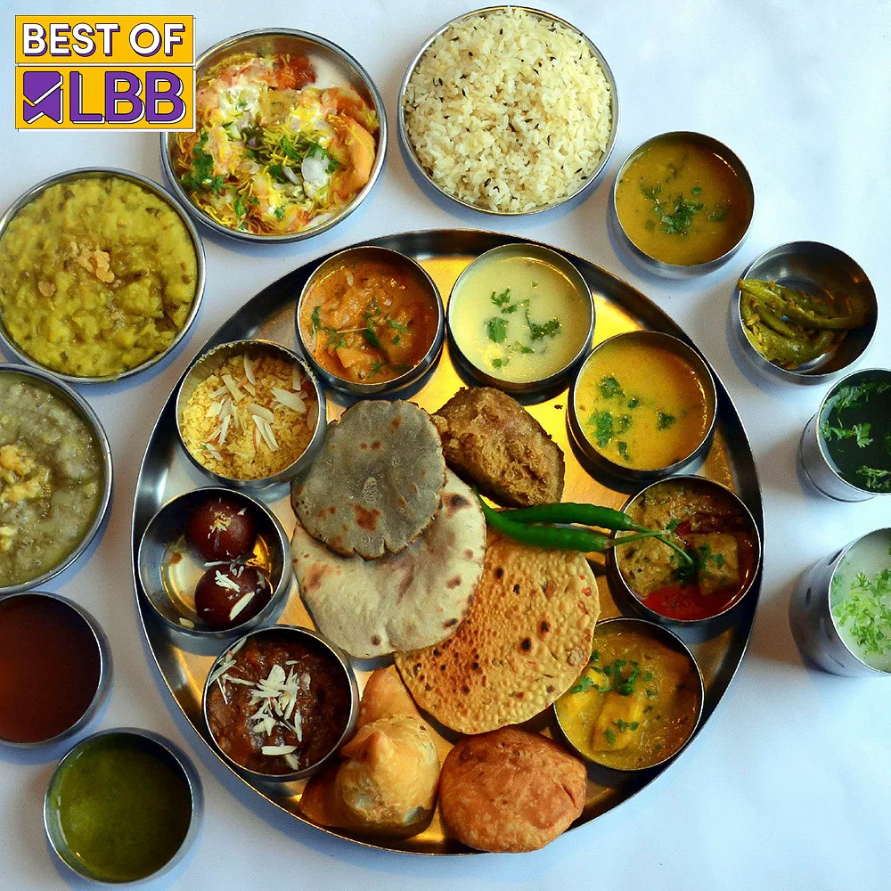

Explore the north indian foods

Dal Chawal is a basic meal of a simple lentil curry, and basmati rice made with simple ingredients and pantry staples. This simple and easy dal recipe will become your go-to weeknight meal!
Dal is the one dish that most regions in Southeast Asia (India, Pakistan, Bangladesh), are familiar with.
Each region, each community might make it differently, but cooking lentils in a curry or soup is definitely one dish you’ll find is a staple dish, consistent across the regions.
Dal literally means lentils and it can refer to both the uncooked lentils, as well as the cooked staple dish, in soup or curry form.
Dal Chawal is the ultimate comfort food. And maybe go-to weeknight meal for many!
Dal is a basic lentil curry, made with cooked lentils in a curry or soup-like consistency, with aromatics like onions, tomatoes, and other spices.
In many Indian/Pakistani household, dal is served with every meal, along with rice and roti, and paired with different cooked vegetables, or dry meat dishes.

The earliest appearance of "naan" in English is from 1803 in a travelogue of William Tooke.[5] The Persian word nān 'bread' is attested in Middle Persian as n'n 'bread, food', which is of Iranian origin, and is a cognate with Parthian ngn, Kurdish nan, Balochi nagan, Sogdian nγn-, and Pashto nəγan 'bread'.[6] Naan may have derived from bread baked on hot pebbles in ancient Persia.[7]
The form naan has a widespread distribution, having been borrowed in a range of languages spoken in the Indian subcontinent and also Central Asia where it usually refers to a kind of flatbread (tandyr nan).[7] The spelling naan has been recorded as being first attested in 1979,[8] but dates back at least to 1975,[9] and has since become the normal English spelling. Many English speakers refer to it as "naan bread" which is a common mistake, as simply "naan" already means "bread".[10]
Naan (Persian: نان, romanized: nān, Urdu: نان, Kurdish: نان, Pashto: ډوډی, Uyghur: نان, Hindi: नान, Bengali: নান) is a leavened, oven-baked (usually using a tandoor) or tawa-fried flatbread,[1] which is found in the cuisines mainly of Iran, Afghanistan, Central Asia, the Indian subcontinent, Indonesia, Malaysia, Myanmar, and the Caribbean.[2][3][4]

A North Indian Thali is a delicious platter in which various dishes of a typical North Indian style meal are served together on a metal plate (thali). It is a complete meal in itself that serves all the nutrients required for a balanced diet. The typical dishes of a North Indian Thali include dal (lentil), rice, vegetable curry, roti (flat bread), dahi (yogurt), papad, salad, a small amount of chutney or pickle and a sweet dish. My North Indian thali is a pure vegetarian platter where i have tried to include some of the popular delicacies from Punjabi cuisine and is no less than a grand feast. It has Paneer Makhani, Dal Fry, Chana Masala, Lachha paratha, Jeera Rice, papad, cucumber salad, Boondi Raita and Kesar Phirni.
The best way of enjoying the local cuisine of any Indian state is to order a thali meal of that state for yourself. Thalis of India are a celebration of various delicacies native to that region and are nothing less than a grand feast. Apart from various restaurants across India serving different Indian thalis, one can get to sample the food of a particular region through different food exhibitions catering in major Indian cities during festivals and special occasions. Any regional thali will typically consist of at least 4-5 native dishes with a signature dish of that state for sure. Let's have a look at some of the regional Indian thalis.

Chole bhature is a food dish popular in the Northern areas of the Indian subcontinent.[1] It is a combination of chana masala (spicy white chickpeas) and bhatura/puri, a deep-fried bread made from maida.[2][3][4]
Chole bhature is often eaten as a breakfast dish, sometimes accompanied with lassi. It can also be street food or a complete meal and may be accompanied with onions, pickled carrots, green chutney or achaar.
There is debate over the place of origin for chole bhature. Some sources claim the dish to have originated in Delhi, where it is very popular.[6][7] Others claim eastern Uttar Pradesh to be the place of origin.
Chole is prepared by cooking chickpeas and adding spices such as cumin, coriander seeds, turmeric powder, and chili powder. Onion, garlic, and ginger are also added for additional flavor. Bhature is prepared by combining flour, salt, and oil, and kneading the dough. The dough is rolled out into circles and deep-fried until the bhature puff up.